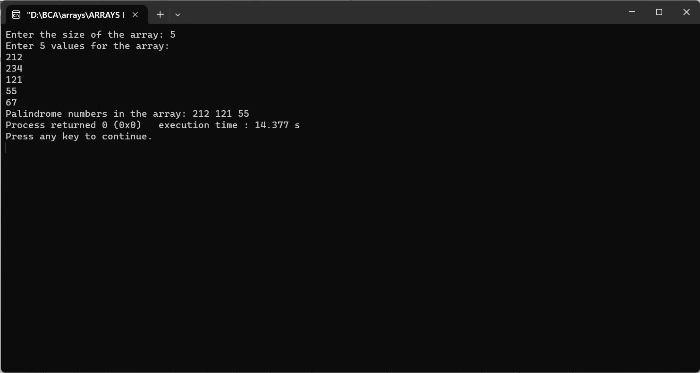

Enter an array from user and print all the palindrome numbers
#include
// Function to check if a number is a palindrome
int isPalindrome(int number) {
int original = number;
int reversed = 0;
while (number > 0) {
int digit = number % 10;
reversed = reversed * 10 + digit;
number /= 10;
}
return original == reversed;
}
int main() {
int size;
printf("Enter the size of the array: ");
scanf("%d", &size);
int arr[size]; // Array to store user input
printf("Enter %d values for the array:\n", size);
for (int i = 0; i < size; i++) {
scanf("%d", &arr[i]);
}
printf("Palindrome numbers in the array: ");
for (int i = 0; i < size; i++) {
if (isPalindrome(arr[i])) {
printf("%d ", arr[i]);
}
}
return 0;
}
